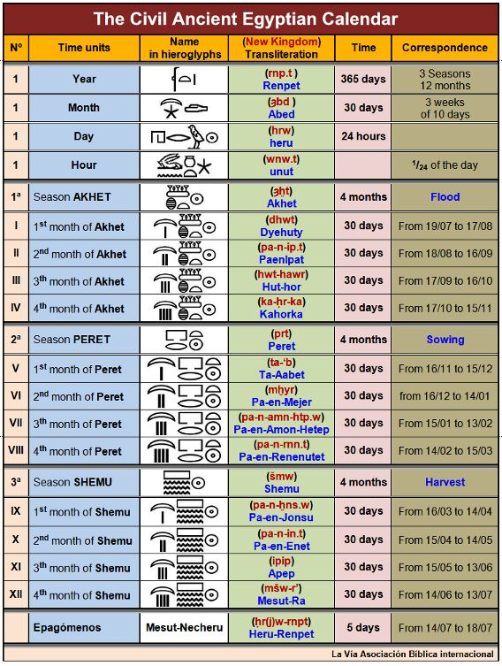

The Ancient Egyptian calendar was divided into three seasons:
1. Akhet (Inundation, equivalent to June - September)
2. Peret (Growing, equivalent to October - February)
3. Shemu (Harvest, equivalent to March - May)
The Rising of Sirius occurred on the first day of Akhet. At least, this was what was meant to happen.
The Egyptian calendar contained 3 seasons, which each contained 4 months of equal length (30 days). Each season, therefore, had 120 days, and three seasons equated to 360 days.
The five remaining days of the year were called the EPAGOMENAL DAYS, mainly comprising of festivals.
The Egyptians acknowledged that there was an extra quarter day each year, or one extra day every four years (what we in the modern world call a LEAP YEAR). However, they made no active attempt to rework their calendar as modern societies have done.
This meant that every four years, New Year's Day was celebrated one day earlier than the Rising of Sirius in Egypt.
Indeed, Parker (1950, p.p. 63) notes that there are realistically only 3 or 4 Egyptian dates that we can attest with real certainty.
Egyptologists have struggled to date events with certainty. It is, however, more achieveable than in the past, as shown by the infographic below.
Even in the 5th Century BC (Duncan, 1998, p.p. 20), Greek historians struggled to date Egyptian events with accuracy, even though Egypt was 'the first ancient civilisation to correct the error of the moon and embrace the sun' (Duncan, 1998, p.p. 20). Their creation of a 365 day year comprising of 12 months of 30 days, divided into 4 seasons each, and an additional 5 days, the 'birthdays' of Osiris, Isis, Horus, Nepthys and Seth, added to the year by Thoth, is extremely close to our modern calendar year.
The Roman author CENSORINUS tells us of a conjunction of the Heliacal Rising and the first day of Akhet, in the year 139 AD. This coincided with the 19th of July of the Julian calendar, and was also commemorated on a coin, giving us substantial archaeological evidence of the event.
Dating began with the new reign of a new king, effectively wiping the previous slate clean. This means that, despite evidence for chronology such as the Turin Canon, and the King List found in the Temple of Seti I at Abydos, we cannot attribute dates to events in a way that we can for later civilisations, such as Rome and Greece.
Essentially, understanding the Heliacal Rising of Sirius allows us to, with the help of some ancient sources, date Egyptian reigns and events with a greater degree of accuracy.
The Rising of Sirius originally indicated the New Year, but the year is actually 365 1/4 days long. Therefore, every 4 years, the Rising is a day out.
The CONJUNCTION, i.e. when the New Year falls on the same day as the Rising, occurs only once every 1460 years. This period of time is called a SOTHIC CYCLE.
This then allows us to date Egyptian events, and work out how long kings reigned for.
We know from sources that the Rising took place on Day 16, Month 4 of Peret during Y7 of Senwosret III.
We also know that there was a Conjunction in the year 2781 BC.
We can then work out what year the Rising occurred.
The 16th Day of Peret 4 is Day 226 of the year.
As the calendar slips by 1 day every 4 years, multiply the day (226) by 4, to find the number of years after the 2781 BC Conjunction that the next occurred.
226 X 4 = 904
904 years after 2781 BC is 1887 BC, and so, the rising must have taken place on Day 16, Month 4 of Peret, 1887 BC.
Although the above example seems to fit nicely into the Egyptian Chronology, it is further complicated by the possibility of a co-regency between Amenemhat I and Senwosret I, shown by the double dated stela of Intef, below. This marks the 30th year of Amenemhat's reign as also being the 10th year of the reign of his son, Senwosret I.

This, of course, has a knock on effect, and we must then be forced to adapt our calculations of later reigns. This is not helped by the fact that we sometimes do not know how long a pharaoh reigned for, and simply use the latest dated piece of evidence from their reign to estimate its length. Fundamentally, the issue of restarting the Egyptian calendar every time a king dies, i.e. dating using regnal years, has caused issues with dating.
Egyptologists have attempted to use the limited evidence we have to attribute exact dates to events, but this generally leads to widespread debate.
Although this page gives a general overview of the Heliacal Rising and the issues it brings up, the Bibliography section contains books which expand on the topic further.